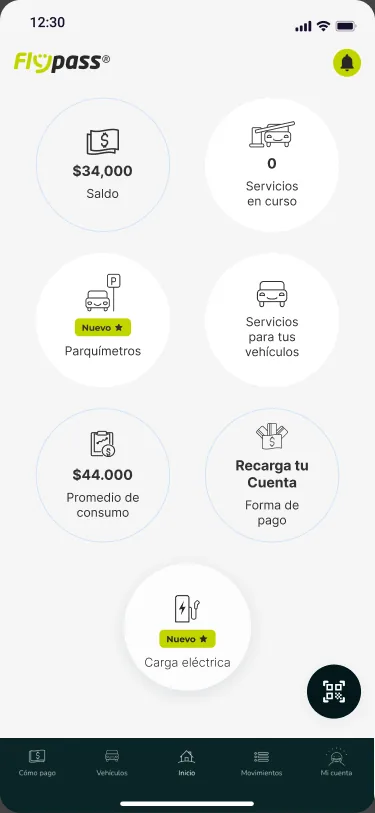
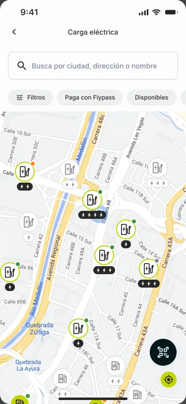
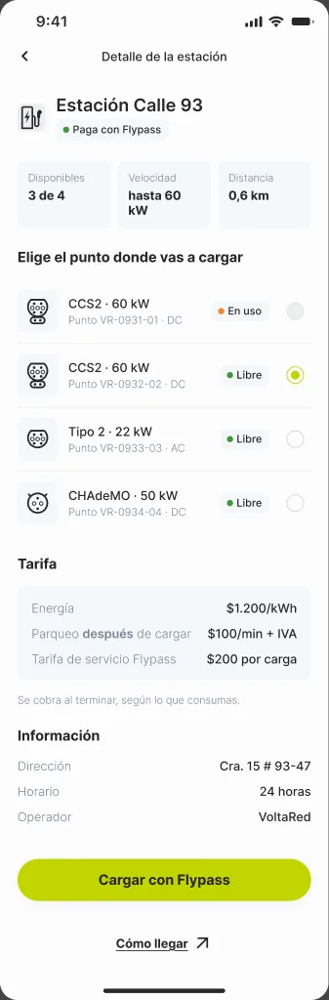
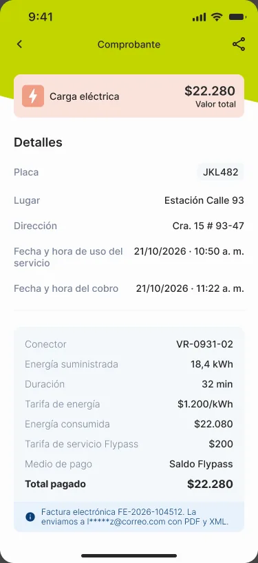
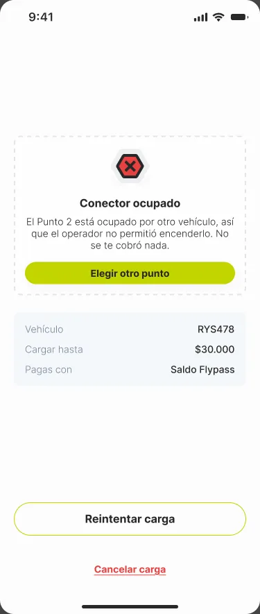

Cargar un carro eléctrico, tan simple como pagar un peaje
Flypass ya resolvía peajes, parqueaderos y combustible para conductores en Colombia. El reto era sumar la carga eléctrica: un servicio nuevo, con hardware de terceros, cobros variables y muchas cosas que pueden fallar en el mundo físico.






El reto
Cargar un carro eléctrico en Colombia todavía genera dudas: ¿la estación funciona?, ¿el conector es compatible?, ¿cuánto voy a pagar?, ¿qué pasa si me voy y la carga sigue? Cada duda es un abandono.
- Cobro variable: se paga por energía (kWh), más parqueo posterior y una tarifa de servicio.
- Hardware de terceros: el cargador puede estar ocupado, fallar o no recibir el cable a tiempo.
- Sesiones largas: el usuario no se queda mirando la app durante 30 minutos.
Decisiones clave
Transparencia antes de cobrar
La tarifa se muestra desglosada en el detalle de la estación y otra vez al configurar. El mensaje es explícito: "se cobra al terminar, según lo que consumas; ahora no se cobra nada". El usuario decide con toda la información.
El usuario pone el límite
El usuario puede cargar al 80%, al 100% o poner un límite propio en pesos o en kWh, con validación de rango. Así controla el gasto sin calcular nada.
Seguimiento fuera de la app
Diseñé las Live Activities de iOS para seguir la carga desde la pantalla de bloqueo, con reglas para cada tipo de meta (porcentaje, pesos o kWh) y notificaciones push en cada hito: inicio, avance, cobro y cierre.
Un sistema visual para el mapa

Diseñar para cuando falla
Una buena parte del trabajo fueron los estados de borde: error de red, cable no conectado a tiempo, cargador ocupado, falla del cargador, sin señal durante la carga, saldo pendiente en cartera y reintento de cobro. Cada uno dice qué pasó, si se cobró algo y cuál es la siguiente acción.

Resultados
En el frente B2B del programa también diseñé el portal de gestión de combustible para empresas: estaciones disponibles en lista y mapa, detalle en drawer y comparador de estaciones.